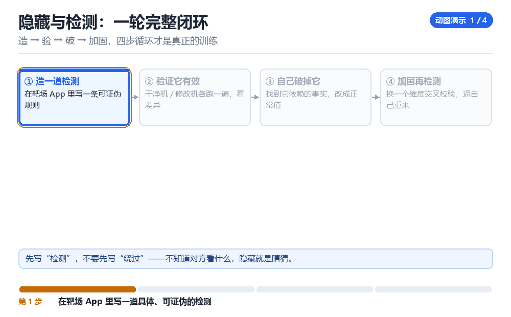

DexProtect 的检测逻辑拆解
从“查什么”反推“怎么防”
企业壳不是“一个检测”，而是一套分层叠加的检测流水线。
1.1 一套典型的检测流水线
把前面所有章节的检测点按“代价从低到高”排一排，就是企业壳的真实结构：便宜的先跑，贵的只在高风险时才跑；任何一层报警，都会提高后续层的采样率。
| 层 | 检测内容 | 代价 | 误报率 |
|---|---|---|---|
| L1 静态 | 包名、su 文件、属性、调试开关 | 极低 | 中 |
| L2 结构 | maps、线程、FD、ClassLoader 数量 | 低 | 低 |
| L3 完整性 | 代码段 CRC、签名校验 | 中 | 极低 |
| L4 环境 | TracerPid、ptrace 权限、注入痕迹 | 低 | 低 |
| L5 证明 | Key Attestation 一致性 | 高 | 极低 |
| L6 行为 | 时延分布、调用序列、异常路径 | 高 | 中 |
1.2 它的三个设计原则
- 分层叠加：单点不可信，但六层同时命中就足够了。
- 动静结合：静态规则便宜、覆盖广；动态行为贵、但难绕。
- 交叉验证：不看单个值，看“值之间的关系”是否自洽（见第 03 章的三绿交叉校验）。
1.3 对抗的思路：找它的“成本边界”
企业壳必须在“保护强度”与“性能 / 兼容性”之间取平衡。这个平衡点就是突破口：它不可能对每一帧都做 CRC，也不可能对每个方法都做完整性校验——所以“在不被采样到的窗口里做改动”永远是有效的思路。
1. 找出检测函数的调用点（谁在调用它们）
2. 看调用频率（是否只在启动/关键操作时跑）
3. 看采集的数据（决定了它能发现什么）
4. 找“它没采集的维度”——那里就是空档1.4 本章自测
- 六层流水线里，哪一层最难绕？
- 为什么“动静结合”是必然选择？
- 企业壳的成本边界在哪？
- 为什么“让检测函数返回安全”是坏主意？
1.5 深入：为什么企业壳偏爱“分层 + 加权”
单一的“是/否”判定太容易被针对：对手只要找到那一个判断点就赢了。而“分层 + 加权”让对手必须同时在多个层面都做到无痕，成本成倍上升。
| 设计 | 对手成本 | 自身成本 |
|---|---|---|
| 单点判定 | 低 | 低 |
| 分层加权 | 高 | 中 |
| 分层 + 动态下发 | 很高 | 高 |
1.6 实战：给一个壳画“检测地图”
- 列出它采集的所有数据（从 hook 点反推）。
- 标注每项数据的采集频率与时机。
- 找出“没被采集的维度”。
- 在这些维度上做改动，而不是正面对抗。
1.7 原理推演：为什么企业壳要“反调试优先”
因为所有后续检测都建立在“能在目标进程里正常执行”这个前提上。如果对手能随意单步、随意改内存，任何检测逻辑都可以被绕过。所以第一优先级永远是“把调试与注入挡住”。
| 优先级 | 目标 | 手段 |
|---|---|---|
| 1 | 挡住调试 | ptrace 检测、反单步 |
| 2 | 挡住注入 | maps 校验、线程校验 |
| 3 | 发现篡改 | CRC、完整性 |
| 4 | 环境判定 | root、模拟器 |
这也解释了为什么“绕过检测”的第一步永远是“先让调试能跑起来”——不解决这个，后面全免谈。
1.8 数据细节：检测点的时间分布
| 时机 | 跑什么检测 | 说明 |
|---|---|---|
| 启动 0~200ms | 反调试、环境 | 最密集 |
| 关键操作前 | 完整性、证明 | 按需 |
| 周期性 | 线程/FD 差分 | 低频 |
| 退出前 | 上报 | 汇总 |
1.9 深入：为什么“反调试”总是第一个跑
因为它保护的是“其他检测能不能正常工作”。如果对手能在你的进程里随便单步、随便改内存，那你后面所有的检测都可以被“改成返回安全”。
| 顺序 | 检测 | 被绕过的后果 |
|---|---|---|
| 1 | 反调试 | 后面全失效 |
| 2 | 反注入 | 检测逻辑被替换 |
| 3 | 完整性 | 代码被改 |
| 4 | 环境 | 误判 |
所以“绕过壳”的第一步永远是“让调试能跑起来”。这一步不通，后面全是盲猜。
1.10 深入：加权评分的一个真实参数
W = {
'tracer': 25, 'anon_exec': 30, 'thread_delta': 20,
'fd_delta': 10, 'loader_delta': 15, 'attest': 50,
}
alert = sum(v for k, v in W.items() if hit(k)) >= 451.11 实战：画出自己的“检测地图”
| 层级 | 采集的数据 | 采集频率 |
|---|---|---|
| L1 | 包名、su 路径 | 启动一次 |
| L2 | maps、线程、FD | 启动 + 周期 |
| L3 | CRC、签名 | 关键操作前 |
| L4 | TracerPid | 周期 |
| L5 | attestation | 按需 |
凌晨一点，测试机还亮着屏
测试机上刚装好加固包，logcat 滚得飞快，但没有一行写着「检测到风险」。你把 frida-server 挂上去，脚本刚 attach，界面照常进了主页面，什么都没发生。这不是壳没工作，恰恰相反：它已经把六项数据全采完、打完分，只是把处置动作压到了后面。真正的线索不在界面上，而在时间线上——某些 native 函数只在启动后的第 380 毫秒前后密集跑了一批，之后每 5 秒稀疏地跑一次。你要做的第一件事不是 hook 它返回安全，是把这个节奏量出来。
把手机横放好，左边开 adb logcat -v time，右边开 frida-trace 的调用时间戳。你会看到检测不是一个开关，而是一条有呼吸的流水线：便宜的动作密集跑，昂贵的动作只在关键操作前跑一次。理解这条节奏比记住任何一条绕过技巧都管用，因为它直接决定了「哪一段窗口里做的改动不会被采样到」。前面把六层按代价排过序，这里要看的是同一套分层在真实时间轴上怎么排队、谁先动手、谁最后才结算。
造 → 验 → 破 → 加固，四步循环才是真正的训练

采样调度器先动了谁
- 调度器 → 对 L1 静态项（包名、
su路径、系统属性、调试开关）→ 在 Application 初始化最开头读一批字符串和getprop→ 结果只是给内部计数器加一个很小的权重，既不写日志也不弹窗。 - 调度器 → 对 进程自身（
/proc/self/maps、/proc/self/task、/proc/self/fd）→ 在启动后约 300~500 毫秒连续采三次 → 结果得到一份「结构基线」，后面每一轮周期采样都拿它当参照，而不是拿一个写死的常量。 - 调度器 → 对 自身代码段 → 只在登录、支付、下发密钥这类关键操作前做一次 CRC → 结果是一次高置信度判定，命中就把计数器直接推过阈值。
- 调度器 → 对 证明链 → 按需向 TEE 请求一次 attestation → 结果不落本地缓存，因为壳自己也怕缓存被改。
- 调度器 → 对 行为时序 → 在后台按 5~30 秒间隔抽样 → 结果用来修正前几层的误报，而不是单独定罪。
分数到了以后，事情才刚开始
- 汇聚器 → 对 六路返回值 → 按权重求和再和阈值比较 → 结果是一个内部 risk 等级，不是布尔值；等级低时什么也不做，只悄悄提高下一轮采样率。
- 处置器 → 对 risk 等级 → 不立刻退出进程，而是把动作挂到「下一个关键操作」上 → 结果是用户看到的现象变成「登录偶发失败」「某个按钮点了没反应」，而不是干净利落的闪退。
- 上报器 → 对 设备指纹与命中项 → 攒够一批才发 → 结果是你在本地抓包时往往看不到「一次检测就一次上报」，容易误判成检测根本没触发。
- 规则器 → 对 采样率与阈值 → 收到服务端配置后热更新 → 结果是同一台机器、同一个 APK，隔一天的行为可能完全不同。
把节奏量出来：一次可复现的观测
# 1. spawn 目标，只跟踪名字里带 check / detect 的导出函数
frida-trace -U -f com.example.protected -i '*check*' -i '*detect*'
# 2. 另开一个终端，抓带毫秒时间戳的日志
adb logcat -v time | grep -i protected > /tmp/logcat.txt
# 3. 把 frida 的命中按 100ms 分桶，看热点落在哪一段
# 回传格式只要两列：ts（毫秒）与 name（符号名）onEnter(log, args, state) {
send({ts: Date.now(), name: 'check_env'});
}
// host 端用 python 分桶：
// bucket = ts // 100 * 100
// collections.Counter(buckets).most_common(5)看到什么算成功：同一台机器连跑三次，热点窗口都落在启动后 300~500 毫秒，且每次点登录之前多出一次孤立尖峰——说明你抓到的是采样节奏，而不是随机的业务调用。看到什么算失败：曲线平得像一条直线，或者每次热点位置都飘几百毫秒、又对不上任何用户操作。那多半是跟错了符号、或者壳把函数名抹掉了，先回到 /proc/<pid>/maps 里确认壳 so 的真实名字和加载地址，再重新选跟踪点。
| 现象 | 最可能的原因 | 下一步验证动作 |
|---|---|---|
| attach 后界面照常进主页面 | 处置被挂到关键操作之后 | 去点一次登录或支付，看是否偶发失败 |
| trace 全空、一个命中都没有 | 检测在 native 且符号被抹掉 | 读 maps 找壳 so，改按偏移下断 |
| 三次跑的热点窗口对不上 | 采样率被服务端动态调过 | 记录每次的规则版本与本地时间 |
| 关键操作前多一次尖峰 | CRC 或 attestation 按需触发 | 在尖峰前后各 dump 一次 maps 对比 |
| 抓包看不到任何上报 | 上报是批量攒发 | 把观测窗口延长到 10 分钟再抓 |
把这条时间线记进实验笔记。下一章你会发现同一套节奏也决定了脱壳窗口：回填集中在启动后那几百毫秒，采样也挤在那几百毫秒，两者重叠才是二代壳真正难啃的地方。再往后 D03 会说明，当规则可以按天热更新时，唯一能反复复用的仍然是这张时间线，而不是某一次侥幸跑通的脚本。